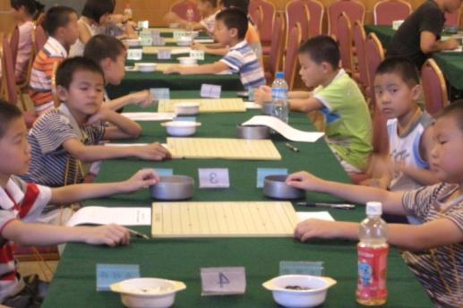

浙江赛比赛现场片段（快报）
#1 浙江赛比赛现场片段（快报）作者：茗弈小刀 发表时间：2009-7-18 12:50:48
臭小子罗罗早上胜了一盘，对手颜思怡。
遗憾的是王姿雯输掉了。
江齐文情况未知。

［ 慎独 于 2009-7-18 16:18:33 时花20金币送鲜花一朵］
［ 慎独 于 2009-7-18 16:18:39 时花20金币送鲜花一朵］
［ 撒蓉儿 于 2009-7-25 10:08:51 时花20金币送鲜花一朵］
#2 Re:浙江赛比赛现场片段（快报）作者：茗弈小刀 发表时间：2009-7-18 13:17:50
江齐文VS刘询#3 Re:浙江赛比赛现场片段（快报）作者：茗弈小刀 发表时间：2009-7-18 14:38:08
臭小子今天还不错，下午又赢了！胜章枫杰。#4 Re:浙江赛比赛现场片段（快报）作者：黑白子 发表时间：2009-7-18 15:17:46
看到某某穿无袖--赤膊
#5 Re:浙江赛比赛现场片段（快报）作者：茗弈小刀 发表时间：2009-7-18 15:57:46
第三轮，罗罗又赢了！王姿雯赢，江齐文输二轮。#6 Re:Re:浙江赛比赛现场片段（快报）作者：茗弈小刀 发表时间：2009-7-18 16:18:10
罗罗今天成绩不错，3分了，希望保持！
儿子和师傅
［ 慎独 于 2009-7-20 12:35:27 时花20金币送鲜花一朵］
#7 Re:Re:Re:浙江赛比赛现场片段（快报）作者：茗弈小刀 发表时间：2009-7-18 16:20:18
第三轮与朱超沂，儿子开局，对方交换，最后被抓三三
［ 慎独 于 2009-7-20 12:35:38 时花20金币送鲜花一朵］
#8 Re:浙江赛比赛现场片段（快报）作者：茗弈小刀 发表时间：2009-7-19 12:48:11
臭小子早上又赢了一盘，目前积分4分。#9 Re:浙江赛比赛现场片段（快报）作者：茗奕的飞猪 发表时间：2009-7-19 21:37:49
下午输了吧，不过也不错啦，小孩子，狠强了。#10 Re:浙江赛比赛现场片段（快报）作者：飞哥 发表时间：2009-7-19 21:43:51
最新消息，儿童组戴宇轩由于下午输了一盘目前排第二名，海宁的沈星涛第一。#11 Re:浙江赛比赛现场片段（快报）作者：飞哥 发表时间：2009-7-19 21:45:03
江齐文成绩也不理想，3胜3负。#12 Re:浙江赛比赛现场片段（快报）作者：海湾浪琴 发表时间：2009-7-19 21:56:19

#13 Re:浙江赛比赛现场片段（快报）作者：茗弈小刀 发表时间：2009-7-20 9:52:26
目前儿童组戴宇轩，沈星涛分别积分5分领先。王姿雯3分。
江齐文赢4输3。
#14 Re:Re:浙江赛比赛现场片段（快报）作者：茗弈小刀 发表时间：2009-7-20 10:18:53

俺臭小子一人在看镜头。
#15 Re:Re:Re:浙江赛比赛现场片段（快报）作者：茗弈小刀 发表时间：2009-7-20 10:22:11
昨晚3个小家伙游西湖，估计这是他们此行的目的？
臭小子在岳飞庙。估计许下誓言要好好下好五子棋，将来报效祖国。赞一个！
#16 Re:Re:Re:Re:浙江赛比赛现场片段（快报）作者：茗弈小刀 发表时间：2009-7-20 10:32:26

快乐花仙子王姿雯与马煜婷
#17 Re:浙江赛比赛现场片段（快报）作者：茗弈小刀 发表时间：2009-7-20 14:39:12
再传捷报，小罗罗下午又赢了。3点40将继续下一轮，明早9点最后一轮希望加油！#21 Re:浙江赛比赛现场片段（快报）作者：撒蓉儿 发表时间：2009-7-25 10:11:33
迟来的祝贺 ，小罗罗的胜负时时牵动着姐姐的心
，小罗罗的胜负时时牵动着姐姐的心
［ 茗弈小刀 于 2009-7-25 13:53:32 时花20金币送鲜花一朵］